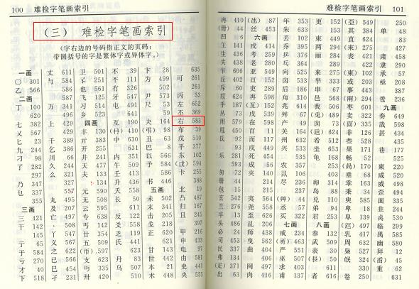

商品搜索

1. 需求分析
当用户在搜索框输入关键字后，我们要为用户提供相关的搜索结果。
这种需求依赖数据库的模糊查询like关键字可以实现，但是like关键字的效率极低，而且查询需要在多个字段中进行，使用like关键字也不方便。
我们引入搜索引擎来实现全文检索。全文检索即在指定的任意字段中进行检索查询。
2. 搜索引擎原理
通过搜索引擎进行数据查询时，搜索引擎并不是直接在数据库中进行查询，而是搜索引擎会对数据库中的数据进行一遍预处理，单独建立起一份索引结构数据。
我们可以将索引结构数据想象成是字典书籍的索引检索页，里面包含了关键词与词条的对应关系，并记录词条的位置。

我们在通过搜索引擎搜索时，搜索引擎将关键字在索引数据中进行快速对比查找，进而找到数据的真实存储位置。
3. Elasticsearch
开源的Elasticsearch是目前全文搜索引擎的首选。
它可以快速地储存、搜索和分析海量数据。维基百科、Stack Overflow、Github 都采用它。
Elasticsearch 的底层是开源库Lucene。但是，你没法直接用 Lucene，必须自己写代码去调用它的接口。Elastic 是 Lucene 的封装，提供了 REST API 的操作接口，开箱即用。
Elasticsearch 是用Java实现的。
搜索引擎在对数据构建索引时，需要进行分词处理。分词是指将一句话拆解成多个单字或词，这些字或词便是这句话的关键词。如
我是中国人。
'我'、'是'、'中'、'国'、'人'、'中国'等都可以是这句话的关键词。
Elasticsearch 不支持对中文进行分词建立索引，需要配合扩展elasticsearch-analysis-ik来实现中文分词处理。
4. 使用Docker安装Elasticsearch及其扩展
获取镜像，可以通过网络pull
docker image pull delron/elasticsearch-ik
或者加载提供给大家的镜像文件
docker load -i elasticsearch-ik-2.4.6_docker.tar
修改elasticsearch的配置文件 elasticsearc-2.4.6/config/elasticsearch.yml第54行，更改ip地址为本机ip地址
network.host: 192.168.229.133
创建docker容器运行
docker run -dti --network=host --name=elasticsearch -v /home/python/Desktop/elasticsearch-2.4.6/config:/usr/share/elasticsearch/config delron/elasticsearch-ik:2.4.6-1.0
5. 使用haystack对接Elasticsearch
Haystack为Django提供了模块化的搜索。它的特点是统一的，熟悉的API，可以让你在不修改代码的情况下使用不同的搜索后端（比如 Solr, Elasticsearch, Whoosh, Xapian 等等）。
我们在django中可以通过使用haystack来调用Elasticsearch搜索引擎。
1）安装
pip install drf-haystack
pip install elasticsearch==2.4.1
drf-haystack是为了在REST framework中使用haystack而进行的封装（如果在Django中使用haystack，则安装django-haystack即可）。
2）注册应用
INSTALLED_APPS = [
...
'haystack',
...
]
3）配置
在配置文件中配置haystack使用的搜索引擎后端
# Haystack
HAYSTACK_CONNECTIONS = {
'default': {
'ENGINE': 'haystack.backends.elasticsearch_backend.ElasticsearchSearchEngine',
'URL': 'http://192.168.229.133:9200/', # 此处为elasticsearch运行的服务器ip地址，端口号固定为9200
'INDEX_NAME': 'meiduo', # 指定elasticsearch建立的索引库的名称
},
}
# 当添加、修改、删除数据时，自动生成索引
HAYSTACK_SIGNAL_PROCESSOR = 'haystack.signals.RealtimeSignalProcessor'
注意：
HAYSTACK_SIGNAL_PROCESSOR 的配置保证了在Django运行起来后，有新的数据产生时，haystack仍然可以让Elasticsearch实时生成新数据的索引
4）创建索引类
通过创建索引类，来指明让搜索引擎对哪些字段建立索引，也就是可以通过哪些字段的关键字来检索数据。
在goods应用中新建search_indexes.py文件，用于存放索引类
from haystack import indexes
from .models import SKU
class SKUIndex(indexes.SearchIndex, indexes.Indexable):
"""
SKU索引数据模型类
"""
text = indexes.CharField(document=True, use_template=True)
id = indexes.IntegerField(model_attr='id')
name = indexes.CharField(model_attr='name')
price = indexes.CharField(model_attr='price')
default_image_url = indexes.CharField(model_attr='default_image_url')
comments = indexes.IntegerField(model_attr='comments')
def get_model(self):
"""返回建立索引的模型类"""
return SKU
def index_queryset(self, using=None):
"""返回要建立索引的数据查询集"""
return self.get_model().objects.filter(is_launched=True)
在SKUIndex建立的字段，都可以借助haystack由elasticsearch搜索引擎查询。
其中text字段我们声明为document=True，表名该字段是主要进行关键字查询的字段， 该字段的索引值可以由多个数据库模型类字段组成，具体由哪些模型类字段组成，我们用use_template=True表示后续通过模板来指明。其他字段都是通过model_attr选项指明引用数据库模型类的特定字段。
在REST framework中，索引类的字段会作为查询结果返回数据的来源。
6）在templates目录中创建text字段使用的模板文件
具体在templates/search/indexes/goods/sku_text.txt文件中定义
{\{ object.name }\}
{\{ object.caption }\}
{\{ object.id }\}
此模板指明当将关键词通过text参数名传递时，可以通过sku的name、caption、id来进行关键字索引查询。
7）手动生成初始索引
python manage.py rebuid_index
8）创建视图
在goods/views.py中创建视图
from .serializers import SKUIndexSerializer
from drf_haystack.viewsets import HaystackViewSet
class SKUSearchViewSet(HaystackViewSet):
"""
SKU搜索
"""
index_models = [SKU]
serializer_class = SKUIndexSerializer
9）创建序列化器
在goods/serializers.py中创建haystack序列化器
from .search_indexes import SKUIndex
from drf_haystack.serializers import HaystackSerializer
class SKUIndexSerializer(HaystackSerializer):
"""
SKU索引结果数据序列化器
"""
class Meta:
index_classes = [SKUIndex]
fields = ('text', 'id', 'name', 'price', 'default_image_url', 'comments')
注意fields属性的字段名与SKUIndex类的字段对应。
10）定义路由
通过REST framework的router来定义路由
from rest_framework.routers import DefaultRouter
router = DefaultRouter()
router.register('search', views.SKUSearchViewSet, base_name='skus_search')
urlpatterns += router.urls
11）测试
我们可以访问如下链接进行测试
http://api.meiduo.site:8000/goods/search/?text=wifi
http://api.meiduo.site:8000/goods/search/?id=1
http://api.meiduo.site:8000/goods/search/?name=iphone
说明：如果在配置完haystack并启动程序后，出现如下异常，是因为drf-haystack还没有适配最新版本的REST framework框架

可以通过修改REST framework框架代码，补充_get_count函数定义即可
文件路径 虚拟环境下的lib/python3.6/site-packages/rest_framework/pagination.py
def _get_count(queryset):
"""
Determine an object count, supporting either querysets or regular lists.
"""
try:
return queryset.count()
except (AttributeError, TypeError):
return len(queryset)
6. 前端
在任何有提供所有框的页面中，搜索框的表单都类似如下：
<form method="get" action="/search.html" class="search_con">
<input type="text" class="input_text fl" name="q" placeholder="搜索商品">
<input type="submit" class="input_btn fr" name="" value="搜索">
</form>
当输入关键字并点击搜获后，会进入到/search.html?q=关键词
在front中添加search.html
在js中添加search.js